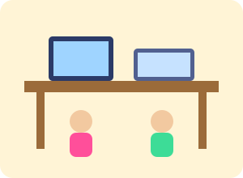
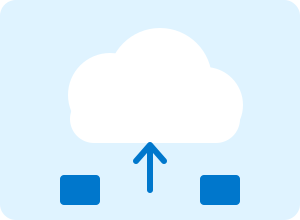

1. ¿Qué son las TIC?
Las TIC son las Tecnologías de la Información y la Comunicación. Son todas las herramientas que usamos para guardar, procesar, enviar y recibir información de forma digital.
Por ejemplo: una computadora, un celular, el Internet, el correo electrónico, las redes sociales, las videollamadas y los programas que usamos todos los días.
Las tres palabras clave
- Información: datos que tienen un significado (textos, fotos, videos, números).
- Comunicación: enviar y recibir mensajes entre personas, aunque estén lejos.
- Tecnología: los equipos y programas que lo hacen posible.
Hoy casi todo lo que hacemos tiene algo de TIC: estudiar en línea, pagar con el celular, ver una película o pedir una cita médica.
"La Web es más una creación social que técnica."
Tim Berners-Lee, creador de la World Wide Web (frase adaptada)
2. Un poco de historia
Las TIC no nacieron de golpe. Fueron apareciendo poco a poco:
- 1844: el telégrafo permite enviar mensajes por cable a larga distancia.
- 1876: Alexander Graham Bell patenta el teléfono.
- 1969: nace ARPANET, la red que dio origen a Internet.
- 1991: se publica la primera página web (World Wide Web).
- 2007: sale el primer iPhone y los teléfonos inteligentes se vuelven populares.
- Hoy: inteligencia artificial, computación en la nube, 5G y objetos conectados.
3. Componentes de las TIC
Las TIC se pueden dividir en tres grandes partes:
- Hardware (lo que se puede tocar)
- Computadoras y laptops
- Celulares y tablets
- Routers, antenas y cables de fibra óptica
- Servidores
- Software (los programas)
- Sistemas operativos (Windows, Android, Linux)
- Navegadores y aplicaciones
- Bases de datos
- Redes (lo que conecta todo)
- Internet
- Wi-Fi y datos móviles
- Redes de empresas (intranet)
¿Cómo se abre una página web?
- Escribes la dirección en el navegador.
- Un servidor DNS la convierte en una dirección IP.
- Tu equipo se conecta al servidor web.
- El servidor te envía la página y tu navegador la muestra.
Todo esto pasa en menos de un segundo.
4. ¿Para qué sirven las TIC?
Sirven para hacer nuestra vida y nuestro trabajo más fáciles, rápidos y conectados.
| Para... | Qué permiten | Ejemplos |
|---|---|---|
| Comunicarnos | Hablar o escribir a cualquier persona al instante | WhatsApp, correo, videollamadas |
| Aprender | Estudiar desde cualquier lugar y a cualquier hora | Aulas virtuales, cursos en línea, bibliotecas digitales |
| Informarnos | Buscar datos y noticias en segundos | Buscadores, periódicos digitales, enciclopedias |
| Trabajar | Organizar tareas y trabajar en equipo a distancia | Documentos compartidos, teletrabajo, la nube |
| Hacer trámites y compras | Pagar, comprar y gestionar sin hacer cola | Banca móvil, tiendas en línea, trámites del Estado |
| Entretenernos | Ver, escuchar y jugar en línea | Música, películas, videojuegos, redes sociales |
| Las TIC también ayudan a cuidar la salud y el medio ambiente. | ||
5. ¿Dónde se usan las TIC en el trabajo?

| Sector | Cómo se aplican | Ejemplo concreto |
|---|---|---|
| Educación | Clases virtuales, plataformas de tareas, material digital | Un profesor dicta clase por videollamada |
| Salud | Historias clínicas digitales, telemedicina, equipos conectados | Un médico revisa los exámenes de un paciente en el sistema del hospital |
| Banca y finanzas | Banca por Internet, pagos digitales, seguridad de datos | Transferir dinero desde el celular |
| Comercio | Tiendas en línea, control de inventario, facturación electrónica | Un negocio vende por redes sociales y entrega a domicilio |
| Industria y minería | Sensores, automatización, control remoto de máquinas | Una fábrica supervisa sus máquinas desde una pantalla |
| Telecomunicaciones | Redes de fibra óptica, antenas 4G/5G, centros de datos | Una empresa instala y mantiene la red de Internet de una ciudad |
| Agricultura | Sensores de humedad, drones, clima en tiempo real | Un agricultor riega solo cuando el sensor lo indica |
| Gobierno | Trámites en línea, atención al ciudadano, datos abiertos | Sacar una cita o un documento por Internet |
| Transporte y logística | GPS, seguimiento de paquetes, rutas inteligentes | Seguir en el celular dónde está tu pedido |

La nube en las empresas
Muchas empresas ya no guardan todo en sus propias computadoras. Usan la nube: servidores en Internet donde se almacenan archivos y se ejecutan programas. Así los empleados acceden a su trabajo desde cualquier lugar.
6. Profesiones relacionadas con las TIC
- Desarrollador de software
- Crea programas, páginas web y aplicaciones móviles.
- Ingeniero de telecomunicaciones
- Diseña y mantiene redes de comunicación: fibra óptica, antenas y satélites.
- Administrador de redes
- Se encarga de que Internet y los equipos de una empresa funcionen bien.
- Especialista en ciberseguridad
- Protege los datos y los sistemas de ataques y robos de información.
- Analista de datos
- Estudia grandes cantidades de datos para ayudar a tomar decisiones.
- Soporte técnico
- Ayuda a los usuarios a resolver problemas con sus equipos y programas.
- Diseñador web y de experiencia de usuario
- Hace que las páginas y aplicaciones sean bonitas y fáciles de usar.
7. Ventajas y desventajas
| Ventajas | Desventajas |
|---|---|
|
|
Consejos para usar bien las TIC
- Usa contraseñas largas y distintas para cada cuenta.
- Activa la verificación en dos pasos.
- No hagas clic en enlaces sospechosos.
- Verifica una noticia antes de compartirla.
- Respeta a los demás en Internet.
- Descansa de las pantallas.
8. Tendencias: el futuro de las TIC
- Inteligencia artificial (IA): programas que aprenden y ayudan a escribir, traducir, diagnosticar o analizar datos.
- Internet de las cosas (IoT): objetos cotidianos conectados a Internet, como sensores, relojes o electrodomésticos.
- 5G: redes móviles más rápidas y con menor retraso.
- Computación en la nube: usar servidores remotos en lugar de equipos propios.
- Ciberseguridad: cada vez más importante para proteger datos personales y empresas.
- Realidad virtual y aumentada: aplicaciones en educación, medicina y entretenimiento.
9. Videos para aprender más
¿Qué son las TIC y para qué sirven?
¿Cómo funciona Internet?
Formación docente: ¿Qué son las TICs?
Si un video no se muestra, usa el enlace de abajo de cada uno. Los videos necesitan conexión a Internet.
10. Enlaces a otras páginas
Estas páginas se abren en una ventana nueva:
Para conocer más sobre las TIC
- Wikipedia: Tecnologías de la información y la comunicación
- Concepto.de: ¿Qué son las TIC?
- Unión Internacional de Telecomunicaciones (UIT)
- UNESCO (las TIC en la educación)
Páginas del Perú
- Ministerio de Transportes y Comunicaciones (MTC)
- INEI: estadísticas del país
- Gob.pe: trámites del Estado en línea
Para aprender a crear páginas web
Si quieres escribirnos: tic@example.org (correo de ejemplo).
11. Cuéntanos cómo usas las TIC
Este formulario es de práctica (no envía datos a ningún servidor).